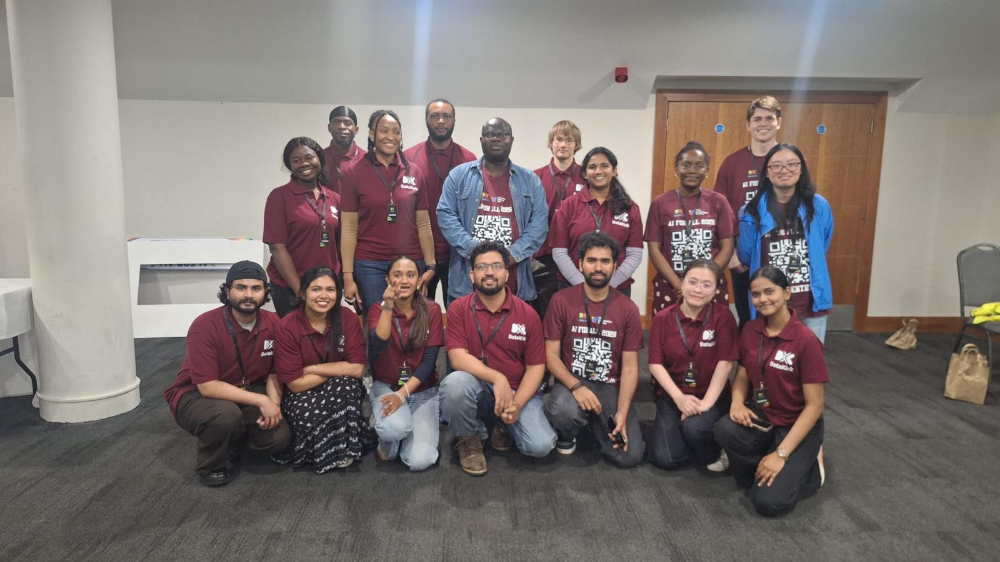
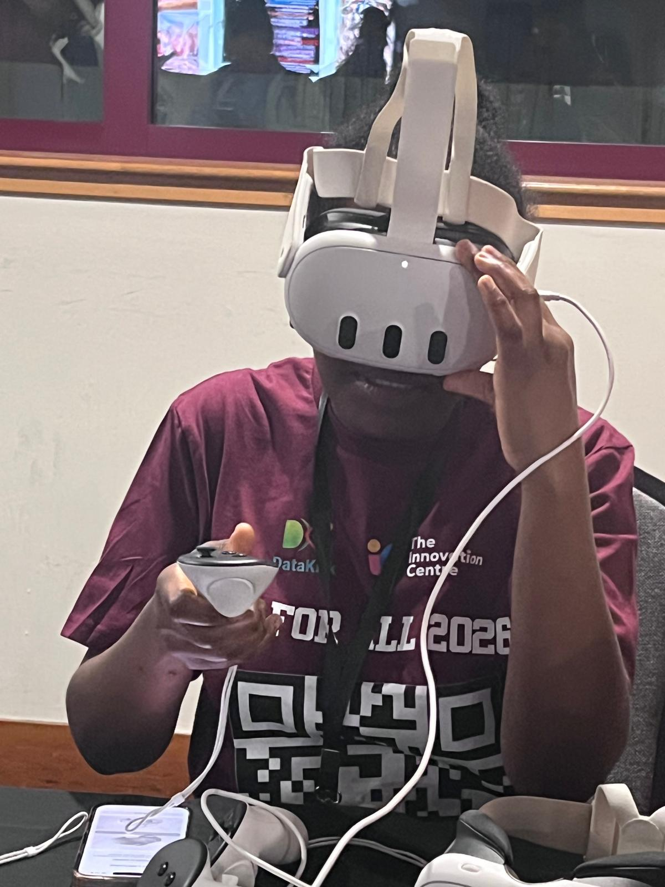
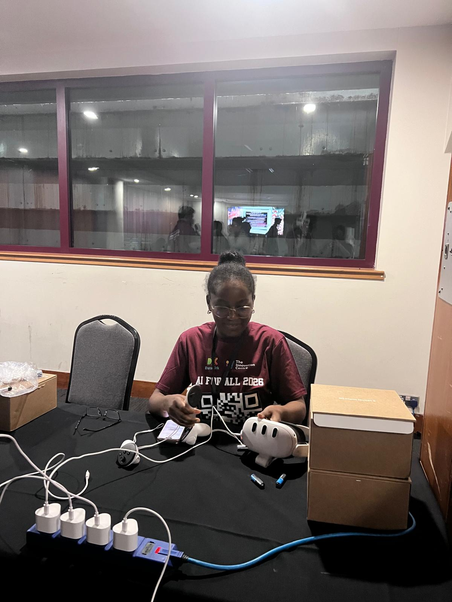
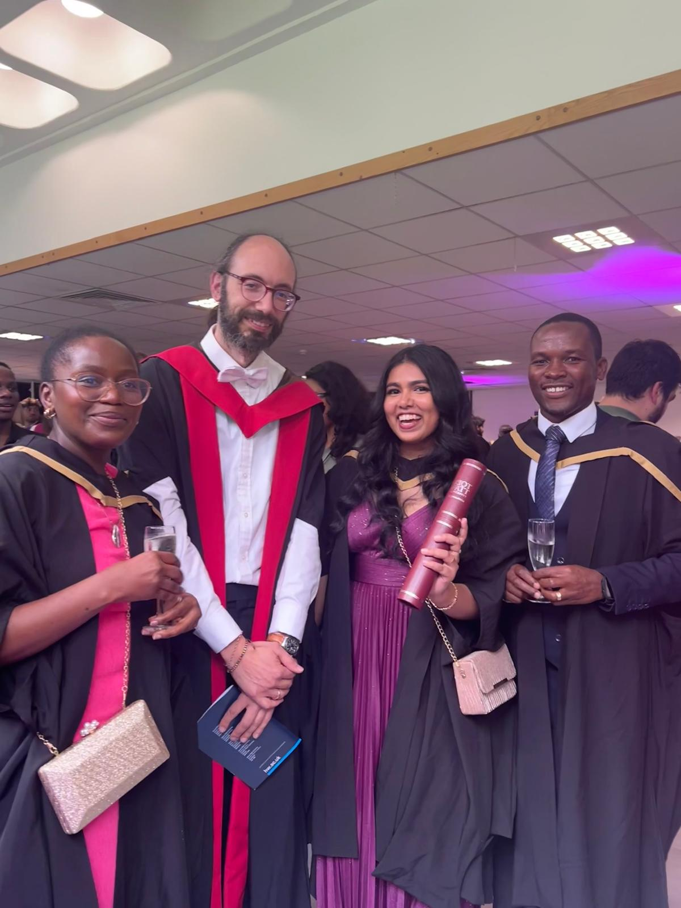
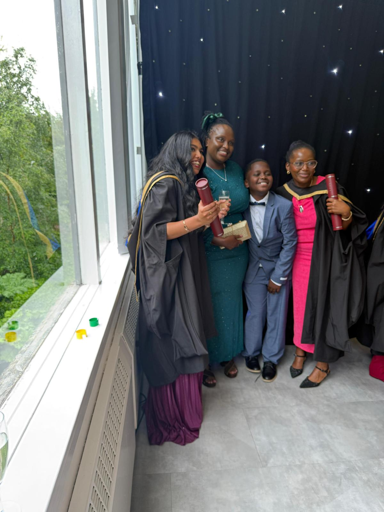
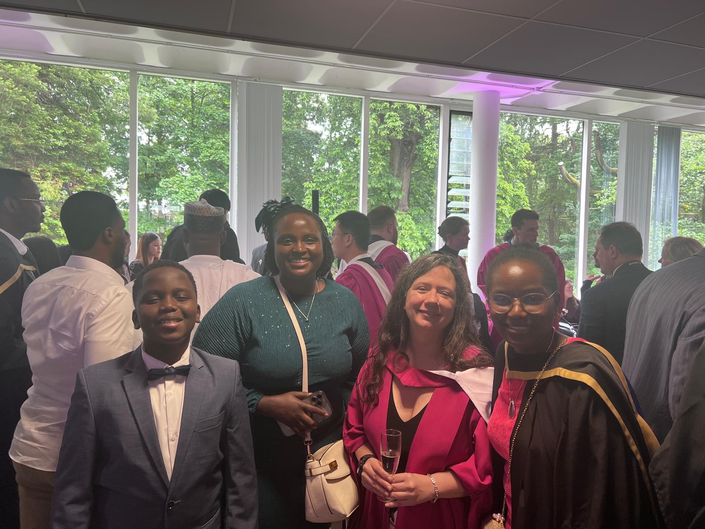
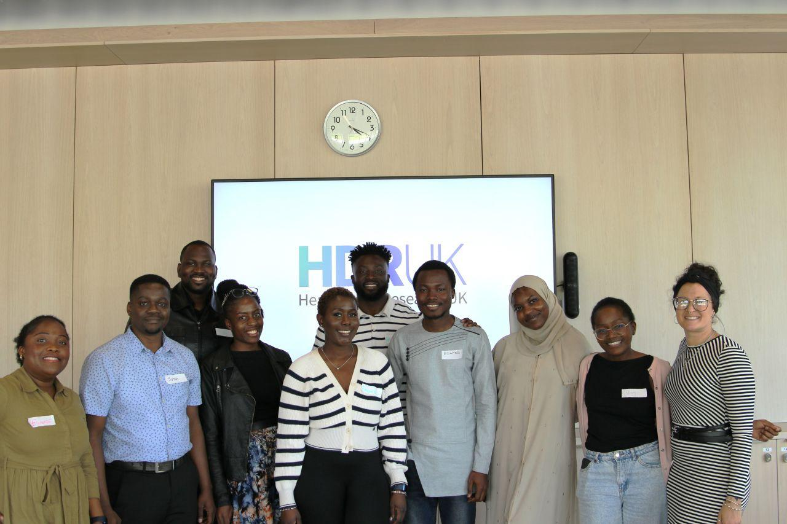
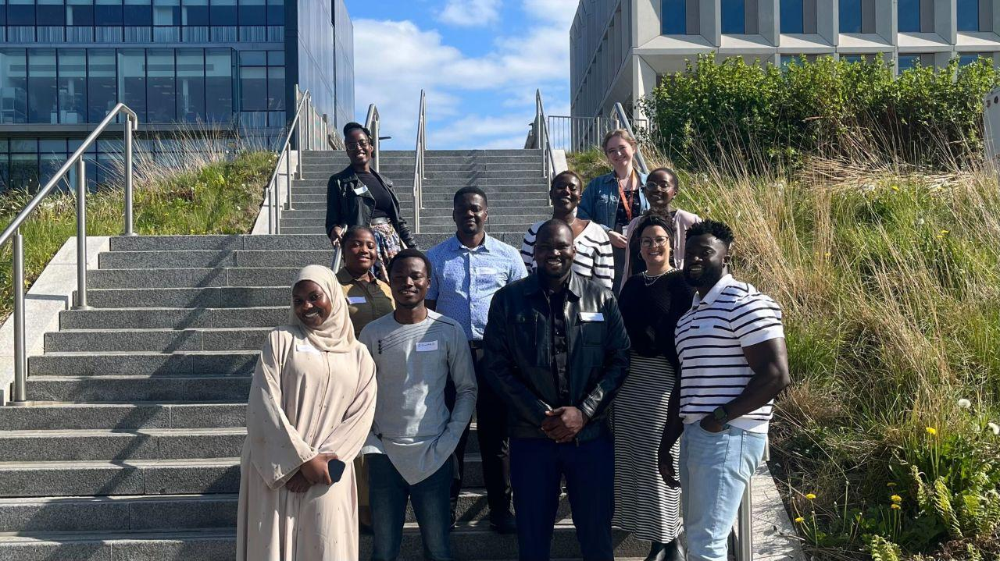
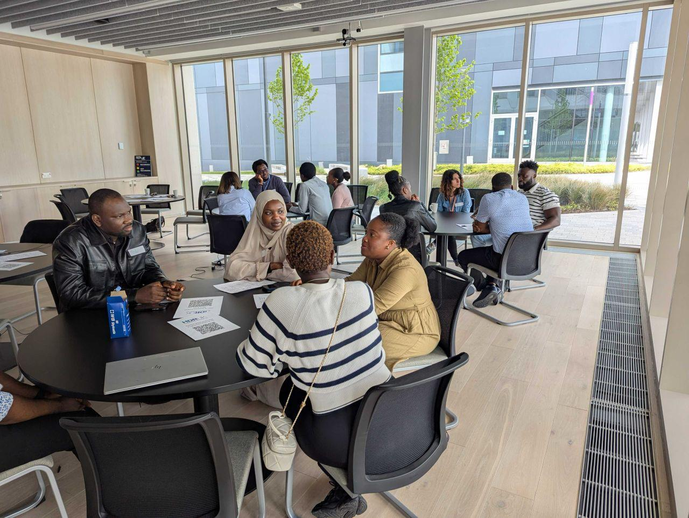
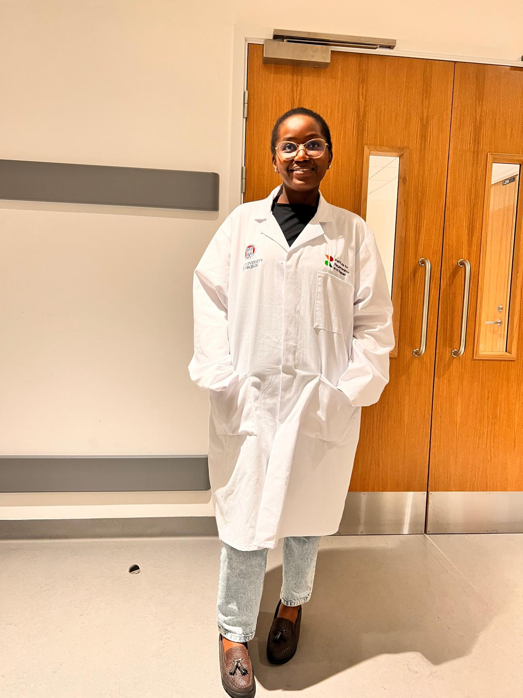

Welcome to a collection of moments from my work, studies
and involvement in the data science community.
Here I share presentations, events and outreach
from my journey.
September 2026 · Heriot-Watt University, Edinburgh
Our research group, led by Dr Marta Vallejo, met with
collaborators from the University of Zaragoza during
their visit to Heriot-Watt. We discussed our projects
and findings, reflected on the challenges we faced
and explored future collaboration and publication plans.
More photos
Together during the visit.
On campus at Heriot-Watt.
AI for All Carnival 2026
27 June 2026 · Edinburgh

I volunteered at the AI for All Carnival in Edinburgh,
welcoming visitors, registering attendees and helping
with event setup and VR activities. It was a chance
to share my enthusiasm for technology and help visitors
explore it hands-on.
More photos

Trying out the VR experience.

Getting the VR equipment ready.
MSc Artificial Intelligence Graduation
19 June 2026 · Heriot-Watt University, Edinburgh

I graduated from Heriot-Watt University with MSc in
Artificial Intelligence
with Distinction
and celebrated with fellow graduates, family, friends and the
lecturers who supported me throughout my studies.
I’m especially grateful to my dissertation supervisor,
Dr Marta Vallejo, and Professor Ioannis Konstas for their
support throughout my MSc.
More photos

Celebrating together on graduation day.

With my dissertation supervisor, Dr Marta Vallejo,
at the graduation reception.
Modules studied
Data Mining and Machine Learning
Natural Language Processing
Biologically Inspired Computation
Research Methods and Project Planning
Advanced Human Computer Interaction
Advanced Software Engineering
Big Data Management
Conversational Agents and Spoken Language Processing
3rd ML-Health Winter Showcase
23 April 2026 · Heriot-Watt University
At the ML-Health Winter Showcase, I presented my MSc research, conducted in collaboration with the University of Zaragoza, Spain, on modelling ALS disease progression in a mouse model. I explained how I combined ultrasound imaging with physiological measurements and used explainable AI methods, SHAP and LayerCAM, to interpret model predictions.
More photos
Discussing the multimodal approach to modelling disease progression.
Showcase participants. Group photo shared by Dr Marta Vallejo.
April 2026 · Outreach
Come Study in Scotland
Taking part in Brand Scotland’s
“Come Study in Scotland” campaign.
Representing the MSc Artificial Intelligence programme
April 2026 · Heriot-Watt University
Shared my experience of studying Artificial Intelligence at Heriot-Watt University.
4–5 September 2025 · Queen Mary University of London
I presented my poster, “Beyond hormones:
non-pharmacological risk factors for osteoporosis
in postmenopausal women”, at PiFORUM25.
The conference was also an opportunity to meet
fellow participants and share research interests.
More photosWith fellow PiFORUM25 participants.“Maths Art from Dobble to hyperbolic tilings”.A colourful moment from the maths art activity.Out with fellow participants on the final evening.
HDR UK Research & Events
2025

As part of the COVID-IMPACT Consortium at the University of Bristol,
I analysed linked NHS health records to investigate SARS-CoV-2
infection during pregnancy. Alongside my research, I connected
with fellow participants at HDR UK events in Edinburgh and
Birmingham, including a lab visit during a meet-up at the
University of Edinburgh’s Usher Institute.
More photos

Together at the HDR UK meet-up in Edinburgh.

Conversations with fellow participants in Edinburgh.

Visiting the labs during an HDR UK meet-up at the
Usher Institute, University of Edinburgh.